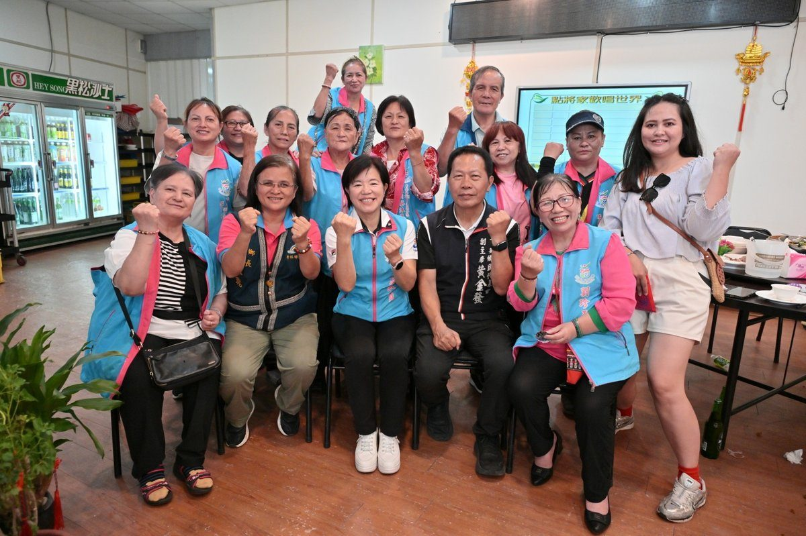
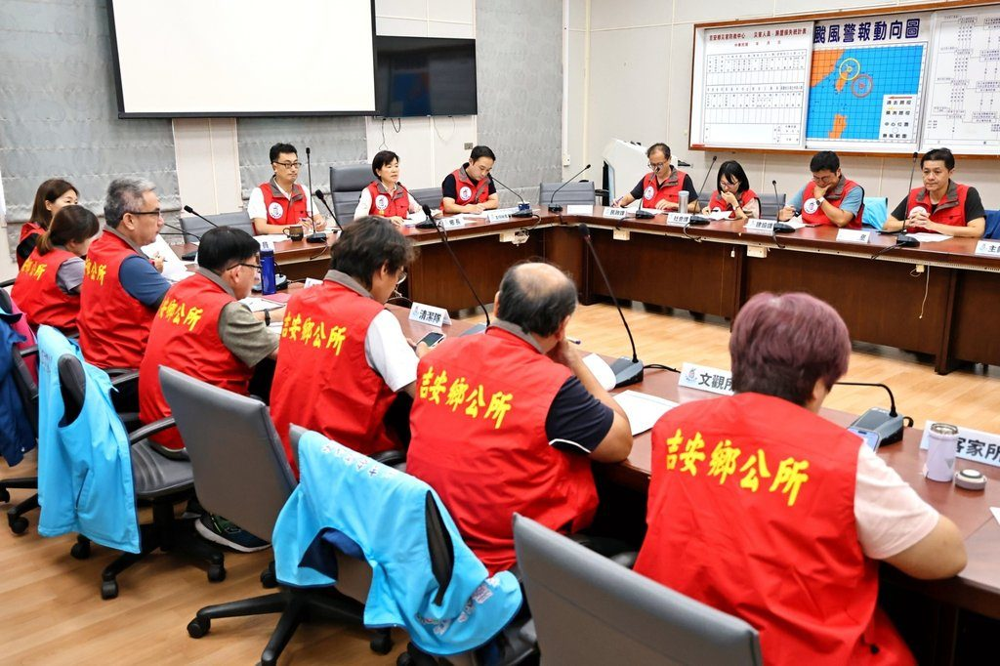

花蓮新城分局攜手亞泥鬥詐 籃球賽交流激盪反詐共識
可樂電子報小編/編輯 為強化警民合作，並提升企業員工反詐意識，花蓮縣警察局新城分局於民 […]…
閱讀全文 →可樂電子報小編/編輯 為強化警民合作，並提升企業員工反詐意識，花蓮縣警察局新城分局於民 […]…
閱讀全文 →
可樂電子報小編/編輯 花蓮縣警察局新城分局秀林分駐所員警日前執行「社區警政再出發」勤務 […]…
閱讀全文 →
可樂電子報小編/編輯 115年7月10日23時許，新城警分局北埔派出所接獲熱心民眾報案 […]…
閱讀全文 →
可樂電子報小編/編輯 颱風來襲前夕，山區氣候不穩、路面濕滑，往往也是車輛故障與受困意外 […]…
閱讀全文 →
可樂電子報小編/編輯 受巴威颱風影響，昨日晚間18時許，新城警分局和平派出所所長周光譽 […]…
閱讀全文 →
可樂電子報小編/編輯 吉安鄉立幼兒園15日在吉安鄉阿美文化館舉辦第31屆畢業典禮。畢業 […]…
閱讀全文 →
可樂電子報小編/編輯 吉安鄉表現亮眼，不僅榮獲團體組及個人組特優，更有9位志工獲頒優等獎，展現社區長年深耕環境 […]…
閱讀全文 →
可樂電子報小編/編輯 吉安鄉公所長期深耕社區發展工作，積極推動終身學習、食農教育及地方 […]…
閱讀全文 →
可樂電子報小編/編輯 吉安鄉公所今（13）日下午於清潔隊會議室舉辦「致敬環保英雄－吉安 […]…
閱讀全文 →可樂電子報小編/編輯 吉安鄉長游淑貞任期以來，帶領團隊深耕社區發展，年年獲得縣級與中央 […]…
閱讀全文 →
可樂電子報小編/編輯 吉安鄉公所原住民事務所日前辦理「115年第三屆全國太魯閣族運動會 […]…
閱讀全文 →
可樂電子報小編/編輯 為推廣社區藝文、美感教育與手作文化，吉安鄉公所攜手花蓮縣電氣裝置 […]…
閱讀全文 →可樂電子報小編/編輯 隨著輕快奔放的原民音律響起，吉安鄉原住民事務所廣場前聚集成百上千 […]…
閱讀全文 →
可樂電子報小編/編輯 因應強烈颱風巴威（BAVI）可能對臺灣造成影響，吉安鄉長游淑貞於 […]…
閱讀全文 →可樂電子報小編/編輯 為推動親子共融、培養幼兒運動習慣並凝聚社區向心力，吉安鄉公所攜手 […]…
閱讀全文 →可樂電子報小編/編輯 強颱巴威步步進逼，吉安鄉公所全面啟動防颱整備機制。鄉長游淑貞今（ […]…
閱讀全文 →可樂電子報小編/編輯 吉安鄉公所持續推動藝術文化扎根地方，打造人文魅力城鎮。繼5月法國 […]…
閱讀全文 →
可樂電子報小編/編輯 新城警分局為期兩個月的「暑期保護青少年－青春專案」於今（1）日正 […]…
閱讀全文 →
可樂電子報小編/編輯 吉安鄉公所3日攜手花蓮縣政府，在永安社區活動中心舉辦「2026花蓮國際藝術下鄉－玩藝列車 […]…
閱讀全文 →
可樂電子報小編/編輯 吉安鄉近日接連發生太昌村、北昌村民宅火警，另有一名吉安鄉民在花蓮 […]…
閱讀全文 →